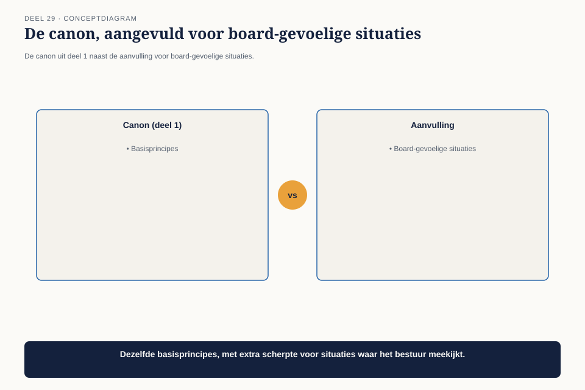

Deel 29 — Gedragscode voor senior architecten
Niveau 3 — Board-gereedheid en praktijkleiderschap | Deelnemersreader BTABoK-cursus, Ductus
29.1 Waar dit deel over gaat
Deel 1, helemaal aan het begin van deze cursus, introduceerde de gedragscode-canons die elk architectuurbesluit onderbouwen — waaronder de waarschuwing tegen roekeloos of opzettelijk misleiden. Op praktijkniveau, met een raad van bestuur die luistert en een resultaat dat extern zichtbaar is, komt die canon onder een ander soort druk te staan dan bij één ontwerpbesluit. Dit deel behandelt wat er gebeurt als eerlijke rapportage en politieke of tijdsdruk botsen.
Aan het eind van dit deel kun je:
- een situatie herkennen waarin de druk om positief te rapporteren de volledigheid van de waarheid in gevaar brengt;
- een afwegingskader toepassen dat het belang van de ontvanger van informatie boven het gemak van de boodschapper stelt;
- een boodschap overbrengen die eerlijk is zonder onnodig alarmerend te zijn.
29.2 De vraag van de communicatieafdeling
Twee maanden voor de wettelijke deadline voor de eerste grote Wtp-mijlpaal — de herberekende aanspraken van de eerste groep deelnemers — vraagt de communicatieafdeling van Meridiaan Claudette om een go/no-go-advies. Ze weten al dat het antwoord “voorlopig nee” wordt: de architectuur-dekkingsgraad op deze specifieke werkstroom staat op tweeënzeventig procent, onder de streefwaarde. Er zijn al externe communicatie-uitingen gepland richting deelnemers waarin de mijlpaal wordt aangekondigd.

De communicatieafdeling vraagt niet expliciet om een gunstiger beeld, maar de vraag komt met een impliciete druk: “Kun je het advies zo formuleren dat we niet meteen naar de raad van bestuur hoeven met een probleem?”
29.3 De canon, herhaald op het hoogste niveau
De eerste competentie herneemt de gedragscode-canon uit deel 1 letterlijk, met een aanvulling die specifiek is voor het board-niveau waar dit deel zich op richt.

De canon uit deel 1 (niveau 1): niet roekeloos of opzettelijk misleiden over wat is bereikt.
De aanvulling voor dit niveau: de plicht om eerlijk te informeren geldt sterker naarmate het besluit dat op de informatie wordt gebaseerd, groter en onomkeerbaarder is. Een go/no-go-advies aan een raad van bestuur, met externe communicatie al gepland, is precies zo’n besluit — de kosten van een te optimistisch advies zijn hier groter dan bij een technisch besluit binnen één team.
Dit is geen nieuwe regel, maar dezelfde regel, toegepast met scherpere consequenties. Wat bij een teambesluit een kleine onnauwkeurigheid zou zijn, wordt bij een boardbesluit een compromis met de betrouwbaarheid van de hele praktijk.
29.4 Het afwegingskader: wiens belang weegt hier het zwaarst?
De tweede competentie geeft een concreet instrument om de druk uit 29.2 te doorzien: een korte set vragen die het belang van de ontvanger van informatie boven het gemak van de boodschapper plaatst.

| Vraag | Toegepast op de situatie |
|---|---|
| Wie neemt het besluit op basis van deze informatie, en wat gebeurt er als die informatie onvolledig is? | de raad van bestuur beslist over een externe aankondiging naar deelnemers; een te positief advies zou een mijlpaal aankondigen die vervolgens niet gehaald wordt |
| Is de druk om het gunstiger voor te stellen in het belang van de organisatie, of van het gemak van wie de boodschap moet brengen? | het gemak van de communicatieafdeling, niet het belang van Meridiaan of de deelnemers |
| Wat kost eerlijkheid nu, tegenover wat een verkeerd besluit later kost? | een ongemakkelijk gesprek nu, tegenover een gebroken externe belofte aan deelnemers later — vergelijkbaar met de kosten-van-uitstel-logica uit deel 15 |
Het antwoord dat uit dit kader volgt, is zelden een keuze tussen twee gelijkwaardige opties. Zodra de vraag concreet wordt gesteld — wie beslist, wiens belang, wat kost uitstel — wordt meestal snel duidelijk dat de druk om het gunstiger voor te stellen geen legitieme grond heeft.
29.5 Eerlijk zonder onnodig alarmerend
De derde competentie voorkomt een overcorrectie: eerlijkheid betekent niet dat elke boodschap in het meest alarmerende licht wordt gebracht. Een dekkingsgraad van tweeënzeventig procent is een reëel signaal om bij te sturen, geen catastrofe — en de toon van de boodschap moet dat onderscheid maken, net als bij de boardcommunicatie uit deel 26.

Claudette’s uiteindelijke advies aan de raad: “De dekkingsgraad op deze werkstroom staat op tweeënzeventig procent, onder onze streefwaarde van negentig. Dat betekent niet dat de mijlpaal per se niet gehaald wordt, maar wel dat we het risico onderschatten als we nu al extern communiceren. Ik adviseer de aankondiging met zes weken uit te stellen, in die tijd naar vijfentachtig procent te komen, en dan te communiceren.”
Dit advies is eerlijk over het probleem, concreet over wat het zou kosten om het op te lossen, en biedt een weg vooruit — geen alarmbericht zonder oplossing, en geen gerustgestelde vaagheid zonder de kern van het probleem.
29.6 Wat de raad besluit
De raad van bestuur, geconfronteerd met de eerlijke boodschap in plaats van een gunstig geformuleerd advies, kiest voor het uitstel. De externe communicatie wordt met zes weken verschoven, zonder dat deelnemers ooit een belofte horen die niet wordt nagekomen. Zes weken later staat de dekkingsgraad op zevenentachtig procent — niet perfect, maar boven de streefwaarde, en de mijlpaal wordt gehaald zoals nu daadwerkelijk aangekondigd.
De communicatieafdeling, die aanvankelijk om een gunstiger advies vroeg, erkent achteraf dat het eerlijke advies hen heeft behoed voor een veel groter probleem: een publieke belofte die niet was nagekomen.
29.7 Kernbegrippen
| Begrip | Betekenis in deze cursus |
|---|---|
| De canon op boardniveau | dezelfde plicht tot eerlijkheid uit deel 1, met scherpere consequenties naarmate het besluit groter en onomkeerbaarder is |
| Het afwegingskader | wie beslist en wat kost onvolledige informatie; wiens belang weegt de druk om het gunstiger voor te stellen; wat kost eerlijkheid nu tegenover een verkeerd besluit later |
| Eerlijk zonder onnodig alarmerend | een boodschap die het probleem niet verbergt, maar ook niet overdrijft, en een weg vooruit biedt |
Volgende deel: deel 30 — de capstone van niveau 3 en van de hele cursus: het complete board-dossier voor CITA-S/P, samengesteld en verdedigd.